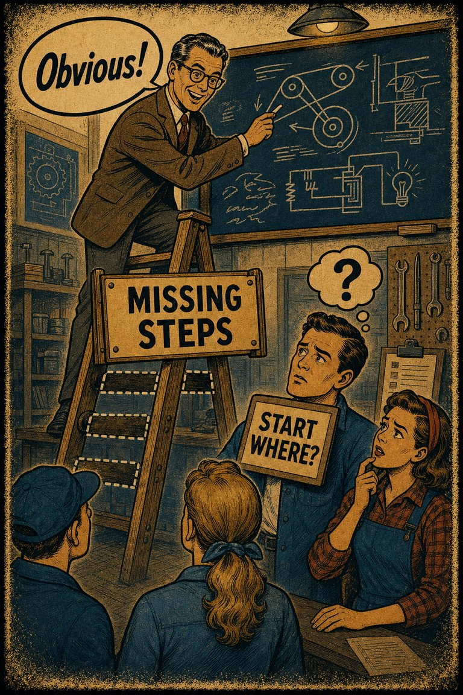
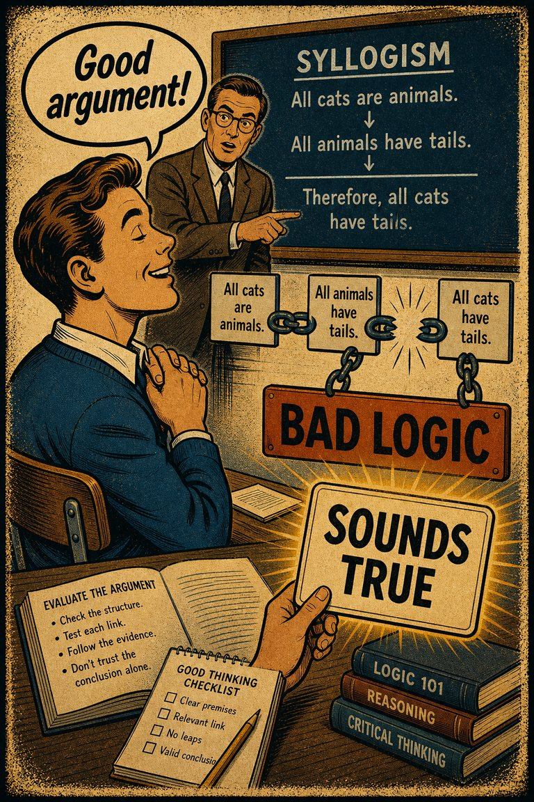

The Misunderstood Limits of Folk Science: An Illusion of Explanatory Depth
The core source for why people can feel they understand mechanisms until asked to explain them in detail.

Cognitive Biases
A practical cognitive-bias site with clear definitions, learning paths, assessments, self-audits, and debiasing tools.
Theory Article
A practical article on why fluency, familiarity, and articulate recall can look like mastery long before deeper understanding is present.
People often mistake an easy explanation for a deep explanation. Once a concept can be restated smoothly, it starts to feel understood. But verbal fluency is a weak test of whether the structure is really there.
Retrieval ease is a seductive cue. If a phrase comes quickly or a mechanism can be summarized in familiar words, the mind often upgrades that smoothness into a judgment of competence.
This is why illusion of explanatory depth, overconfidence effect, and curse of knowledge fit together so well. Each one treats a feeling of ease as if it were a reliable meter of grasp.
The illusion usually breaks under demand for transfer. Contrast this case with a nearby case. Explain the mechanism without the slogan. Predict what would count against the current reading. Teach it to someone who does not already share the background assumptions.
These are not cruel tests. They are the first places where understanding has to cash out into structure rather than recital.
That is why CogBias keeps adding quick checks, near-neighbor contrasts, repair questions, and assessments that ask for the next move rather than just the right noun. The site should keep forcing the distinction between sounding fluent and thinking well.
If the user leaves with less bluffable understanding, the site is doing its real job.
Theory pages are editorial synthesis. These direct sources from the related bias pages keep the larger claims tied to the underlying literature.
The core source for why people can feel they understand mechanisms until asked to explain them in detail.
Useful for separating overestimation, overplacement, and overprecision instead of treating overconfidence as a single thing.
A defining source for why people who know an answer struggle to model what it is like not to know it.
The standard experimental source for how believable conclusions can distort validity judgments.
The flagship paper behind the now-famous competence-and-self-assessment effect.
Use these entry pages after the article if you want the same theory translated into more concrete diagnostic and repair tools.
The tendency to believe you understand how something works more deeply than you actually do, especially until you are forced to explain the mechanism step by step.

The tendency to be more certain about judgments, forecasts, or abilities than the evidence warrants.

The tendency for informed people to underestimate how hard it is for less-informed people to follow, predict, or reconstruct the same material.

The tendency to judge an argument as stronger when its conclusion seems believable and weaker when its conclusion seems unbelievable, even if the reasoning structure is unchanged.
The tendency for low skill or shallow understanding to produce overestimation of one's own competence, while higher-skill people may underestimate how unusual their competence really is.